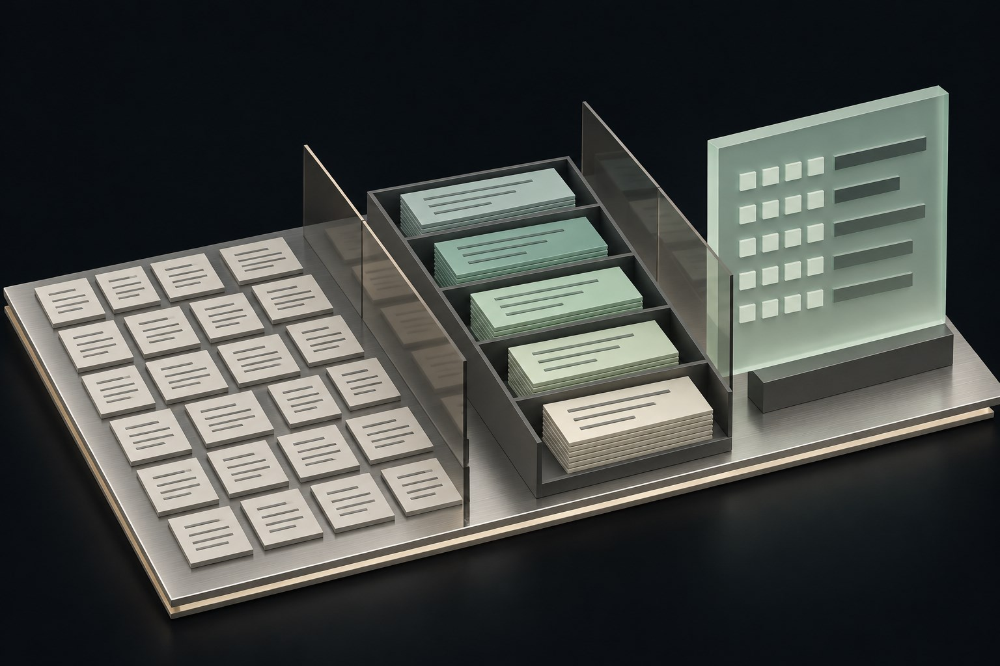

Get a feel for the method.
Walk through original Study 1 brand posts and try live OpenAI naming and classification.
OPEN SOURCE / RESEARCH SOFTWARE / v0.4.0
Discover topics. Interpret with people. Measure what changes. A reproducible workflow for public-health researchers and the agents working alongside them.
New here?

Open methods. Downloadable evidence.
Discovery through prevalence
Python package + agent contract
Ten files protected by checksums
A method your agent can run. Evidence you can understand.
TopicLLM helps researchers answer those questions across thousands of short texts. It finds groups of similar language, asks an LLM to suggest names, and gives researchers the evidence to turn those groups into meaningful themes. A validated classifier can then measure how common each theme is across time.
Walk through original Study 1 brand posts and try live OpenAI naming and classification.
Fork the repository or install the package. Your agent checks inputs, runs the analysis and retains the evidence.
Review themes, validation and interpretation before using outputs as research findings.
Original data, open methods, illustrative results. A fresh run can differ because topic models and LLMs include probabilistic steps, and seeds, model versions and software can change.
01 / The conceptual model
One chain from documents to testable prevalence. Software and agents carry out the computations; researchers define the question, approve the themes and assess the evidence.
MiniLM embeddings, UMAP and HDBSCAN produce candidate topics. The reference search scores 1,200 candidate ceilings by coherence and retains the winning fitted model. The observed topic count is a result, not a target.
Evidence retained
↳ all_iteration_results.json↳ topics_for_naming.csv↳ fitted_model.pkl + provenance hashesHUMAN REVIEW IS A GATEAn agent prepares the evidence. Actual researchers approve interpretation and independently annotate the research benchmark. Read the method ↗
02 / Your agent. A shared protocol.
Begin with the original-data integrity check. Then bring your own research question, approved data and model credentials. The repository tells your agent what to run, what to retain, and where to stop for you.
# In your fork, with an environment activated python -m pip install ".[dev]" topicllm --profile quickcheck \ --output-dir runs/quickcheck # Then give your agent AGENTS.md + REPRODUCE.md
The quickcheck verifies original Study 1 files, preparation and counts. No API calls.
Original data. Inspectable execution.
03 / The study behind the method
The pipeline was built for, and first applied in, the author's dissertation: a study of what eleven alcohol companies said on Twitter before, during, and after the first pandemic lockdowns, and of whether that messaging moved the public conversation.
| Theme | Pre-pandemic (%) | Peri-pandemic (%) | Post-pandemic (%) |
|---|---|---|---|
| Alcohol Delivery and Isolation Drinking | 9.1* | 17.4† | 11.9*† |
| Restaurant Support | 1.9* | 5.5† | 1.7* |
| Social Media Promotions | 6.6* | 16.5† | 10.6*† |
| Sports | 8.2 | 11.4 | 8.9 |
| Gaming | 1.1 | 2.0 | 1.6 |
* differs from peri-pandemic; † differs from pre-pandemic (p < 0.0033, Bonferroni-corrected).
04 / Read the primary evidence
The methods paper describes the instrument. The original studies are available directly from the unchanged dissertation. Existing reflowed PDF and Word editions are also preserved. The methods paper has a separately identified audited revision.
Methods · 2026
A transparent chain from documents to topics, human-reviewed themes, validated labels and prevalence estimates.
Study 1 · 2026
“This study aimed to identify themes used in tweets by alcohol brands early in the pandemic, determine if the prevalence of these themes differed across time, and characterize the sentiment used in the themes.”
Study 2 · 2026
“Early potential exposure to alcohol brand tweets significantly predicted subsequent user-generated content about alcohol delivery and isolation drinking … Conversely, early user-generated content did not significantly predict subsequent potential exposure.”
The full dissertation, Alcohol Marketing on Social Media During the COVID-19 Pandemic: Historical Perspectives, Modern Evidence, and Future Regulation (The University of Texas at Austin, 2025), is available here unchanged.
05 / Original Study 1 data
The author has released the Study 1 alcohol-brand data for this demonstration. Download the original-data corpus, inspect its preparation, or let your agent rerun discovery. Study 2 user data are not included.
5,872 records from 11 brands, January 2019–July 2021. Includes one explicitly retained blank text.
704 nonempty lockdown texts, March 25–May 31, 2020, preserving the archived modeling input.
5,871 nonempty texts, with stable record IDs, brands and dates.
The exact list used by the recorded modern discovery run.
Counts, exclusions, model settings, topic words, outliers and environment.
Understand the files and their provenance before running the workflow.
Original data. Inspectable evidence.
The demonstration now uses original Study 1 data. The recorded discovery run, live LLM examples and published dissertation results are each identified so you can tell what was measured and when.
Topic models and LLMs include probabilistic steps. A fresh run can group or label some posts differently, especially when the random seed, model, or software version changes. The purpose is to demonstrate the method, not force the historical outputs.
Run it with your agent →Scope of this release
Only Study 1 brand content and research fields are included. Collector emails and administrative fields are excluded. Study 2 individual-user records remain outside the public release.
06 / Build on the implementation
A maintained Python pipeline written against the current OpenAI SDK, with documented prompts and search spaces. Maintained changes, including a larger classification output limit, are distinguished from the historical protocol. It adds a seeded search, an enforced benchmark gate, checkpointing for corpus-scale runs, and a test suite. Out of the box it uses the original Study 1 discovery and analysis inputs.
Start with the reproduction guide. The repository includes an agent contract, installable Python package, original-data integrity checks, protected source hashes and explicit researcher review gates.
git clone https://github.com/jethomasphd/TopicLLM.git
cd TopicLLM
python -m pip install ".[dev]"
topicllm --profile quickcheck --output-dir runs/quickcheck
# Then read AGENTS.md and REPRODUCE.md with your agent.
# Install ".[ml,dev]" for discovery and declare a budget before API calls.Start a reproducible workflow Download Python source + data
| Component | Where | What it is |
|---|---|---|
| Reference pipeline | dtm_pipeline/ | Five stage scripts, orchestrator, configuration, original-data verifier, test fixtures and tests |
| Browser instrument | docs/app/ | Original-data visual walkthrough, live examples, and a local teaching sandbox; research runs use Python |
| Supplement S1 | S1_bertopic_optimization.txt | Archival Stage 1 code, transcribed from the dissertation appendices |
| Supplement S2 | S2_democratic_topic_naming.txt | Archival democratic naming (openai==0.27.0) |
| Supplement S3 | S3_llm_classification.txt | Archival corpus-scale classification (openai==0.27.0) |
Citation
Cite the methods preprint for the pipeline and the software for the code. DOIs will be
added here when the preprints are deposited. The repository also carries a
CITATION.cff
that GitHub reads.
Thomas, J. E., Murthy, D., Pinedo, M., Loukas, A., & Pasch, K. E. (2026). Coherence-optimized topic modeling with democratic large language model interpretation: A human-in-the-loop pipeline for public health surveillance of social media [Preprint].
Thomas, J. E., Murthy, D., Pinedo, M., Loukas, A., & Pasch, K. E. (2026). Alcohol marketing on Twitter during the COVID-19 pandemic: Theme identification, prevalence comparison, and sentiment analysis [Preprint].
Thomas, J. E., Murthy, D., Pinedo, M., Loukas, A., & Pasch, K. E. (2026). Alcohol information dynamics during crisis: A longitudinal analysis of bidirectional influence between alcohol industry marketing and user-generated content on Twitter during the COVID-19 pandemic [Preprint].
Thomas, J. E. (2026). TopicLLM: Coherence-optimized topic modeling with democratic large language model interpretation [Computer software]. https://github.com/jethomasphd/TopicLLM
Thomas, J. E. (2025). Alcohol marketing on social media during the COVID-19 pandemic: Historical perspectives, modern evidence, and future regulation [Doctoral dissertation, The University of Texas at Austin].@misc{thomas2026topicllm_methods,
author = {Thomas, Jacob E. and Murthy, Dhiraj and Pinedo, Miguel and Loukas, Alexandra and Pasch, Keryn E.},
title = {Coherence-Optimized Topic Modeling with Democratic Large Language Model Interpretation: A Human-in-the-Loop Pipeline for Public Health Surveillance of Social Media},
year = {2026},
note = {Preprint},
url = {https://topicllm.dev/}
}
@misc{thomas2026alcohol_marketing,
author = {Thomas, Jacob E. and Murthy, Dhiraj and Pinedo, Miguel and Loukas, Alexandra and Pasch, Keryn E.},
title = {Alcohol Marketing on Twitter During the COVID-19 Pandemic: Theme Identification, Prevalence Comparison, and Sentiment Analysis},
year = {2026},
note = {Preprint}
}
@misc{thomas2026information_dynamics,
author = {Thomas, Jacob E. and Murthy, Dhiraj and Pinedo, Miguel and Loukas, Alexandra and Pasch, Keryn E.},
title = {Alcohol Information Dynamics During Crisis: A Longitudinal Analysis of Bidirectional Influence Between Alcohol Industry Marketing and User-Generated Content on Twitter During the COVID-19 Pandemic},
year = {2026},
note = {Preprint}
}
@software{thomas2026topicllm,
author = {Thomas, Jacob E.},
title = {TopicLLM: Coherence-Optimized Topic Modeling with Democratic Large Language Model Interpretation},
year = {2026},
url = {https://github.com/jethomasphd/TopicLLM},
license = {MIT}
}
@phdthesis{thomas2025dissertation,
author = {Thomas, Jacob E.},
title = {Alcohol Marketing on Social Media During the COVID-19 Pandemic: Historical Perspectives, Modern Evidence, and Future Regulation},
school = {The University of Texas at Austin},
year = {2025}
}